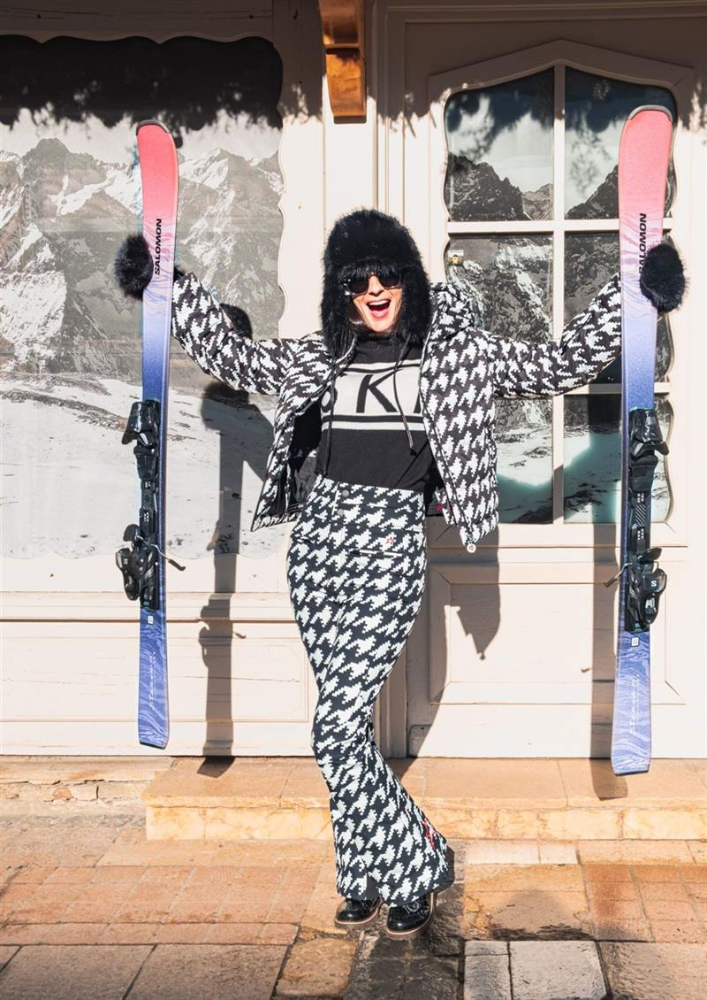
Sur les pistesSki
Vestes, pantalons et combinaisons techniques aux finitions couture, pensés pour le froid sec du glacier.
Une boutique de ski haut de gamme et une sélection de créateurs de ski et de mode, choisis pour celles et ceux qui vivent la montagne avec style, des pistes du glacier jusqu'aux terrasses d'altitude.
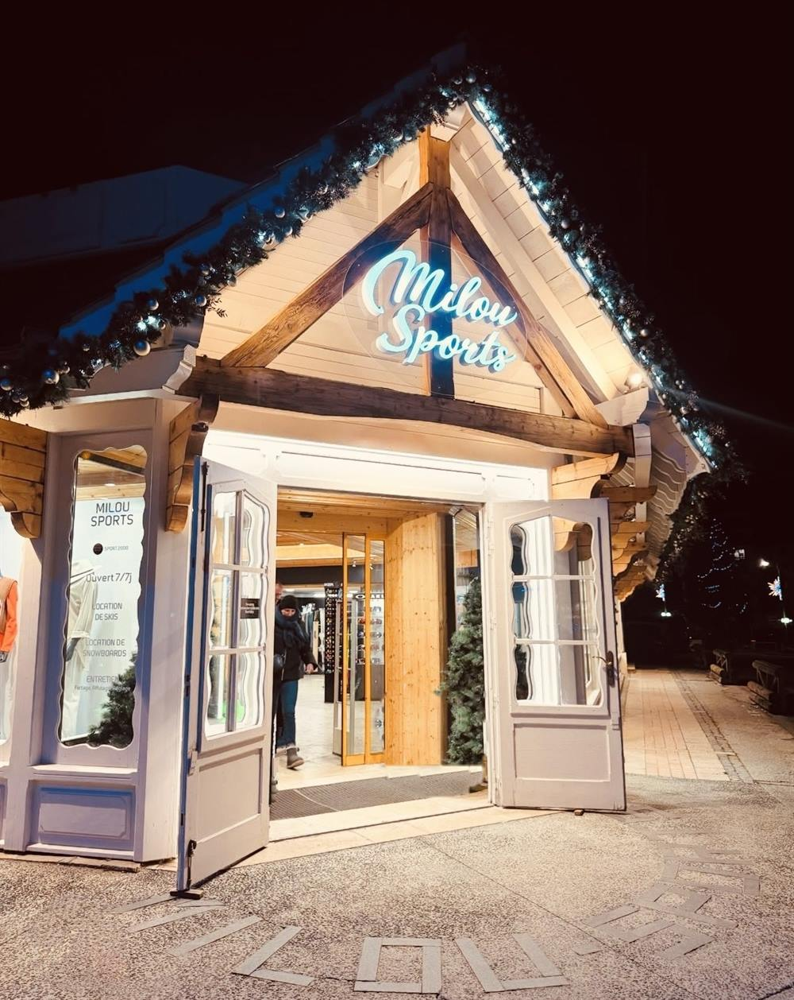
Dans une boutique d'angle au cœur de la station, à deux pas des pistes, Milou Sports réunit les grandes signatures du ski et de la mode montagne haut de gamme dans un écrin de bois.
Chaque pièce est sélectionnée pour sa coupe, ses matières et sa tenue sur les pistes comme en ville. Combinaisons techniques, doudounes iconiques, maille douce et tenues d'après-ski : la garde-robe complète d'une saison en altitude.
Notre équipe de passionnés cumule plus de 30 ans d'expérience : un savoir-faire de plus en plus rare, et notre plus grande force. Elle vous reçoit en français et en anglais, pour un conseil attentif et sans précipitation.
Des signatures du ski de luxe aux labels de mode, toutes réunies sous un même toit.

Sur les pistesVestes, pantalons et combinaisons techniques aux finitions couture, pensés pour le froid sec du glacier.
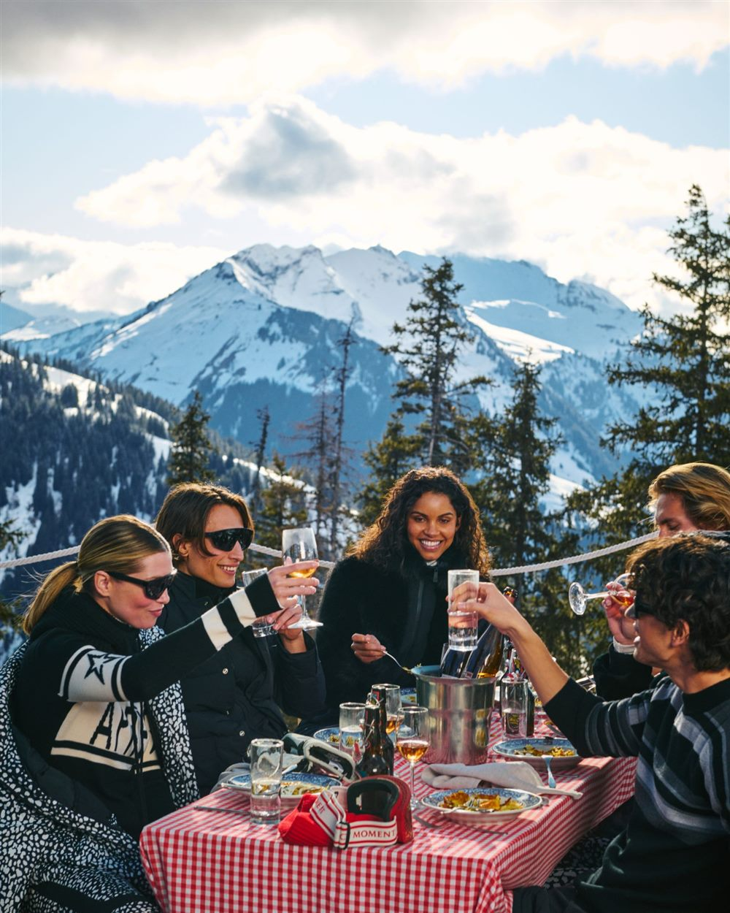
En terrasseDoudounes, maille cachemire et bottes fourrées pour les fins de journée au soleil et les soirées au chalet.
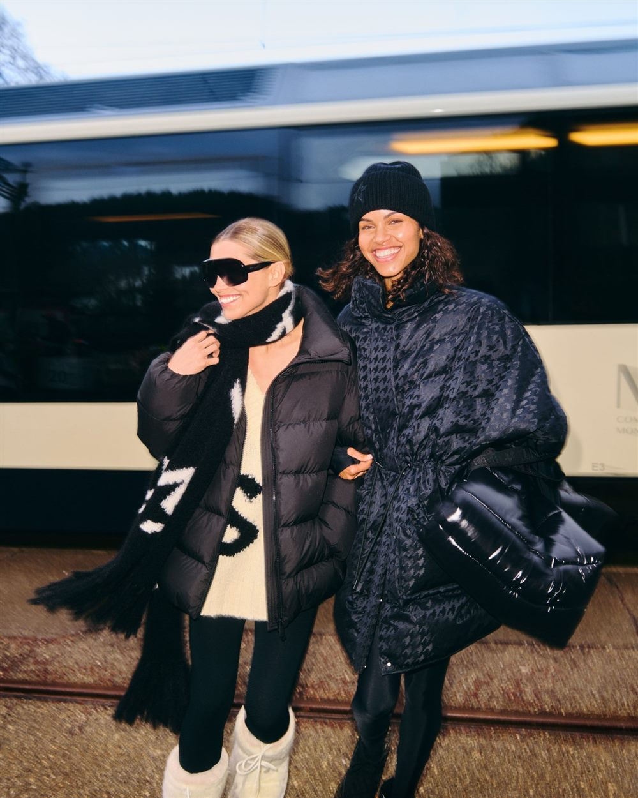
En toutes saisonsPrêt-à-porter et accessoires des créateurs de la boutique, à porter en station comme en ville.
Location de skis, snowboards, snowscoots, chaussures et casques aux Deux Alpes, à 200 m du télésiège du Diable et des caisses des remontées mécaniques. Réservez en ligne sur notre page Sport 2000, ou venez directement en boutique : grâce à notre grand parc de matériel, vous pouvez aussi louer sur place, sans réservation.
Le meilleur de la saison : des skis d’exception pour les skieurs les plus exigeants, sur piste comme hors-piste.
Des skis performants et précis pour les skieurs confirmés qui attaquent les pistes noires.
Des skis polyvalents pour progresser et profiter de tout le domaine, des pistes rouges aux grandes balades.
Un matériel facile et tolérant pour les débutants et les skieurs occasionnels.
Planches freeride et all-mountain, boots et fixations ajustées sur place.
Snowscoots Centsix nouvelle génération tout suspendus, en plusieurs gammes : la glisse la plus demandée de la station. Location snowscoot →
Skis, chaussures et casques adaptés à chaque âge, du jardin des neiges aux premières pistes rouges.
Chaussures thermoformables, casques et masques, à louer seuls ou avec vos skis.
Comme une cuisine ouverte, notre atelier se dévoile depuis la rue : regardez nos skimen préparer vos skis, entretenus après chaque sortie.
Laissez vos skis à la boutique et repartez l'esprit léger pour vous détendre après votre journée sportive.
Sur demande, nous livrons vos skis directement à domicile pour un départ en toute sérénité.
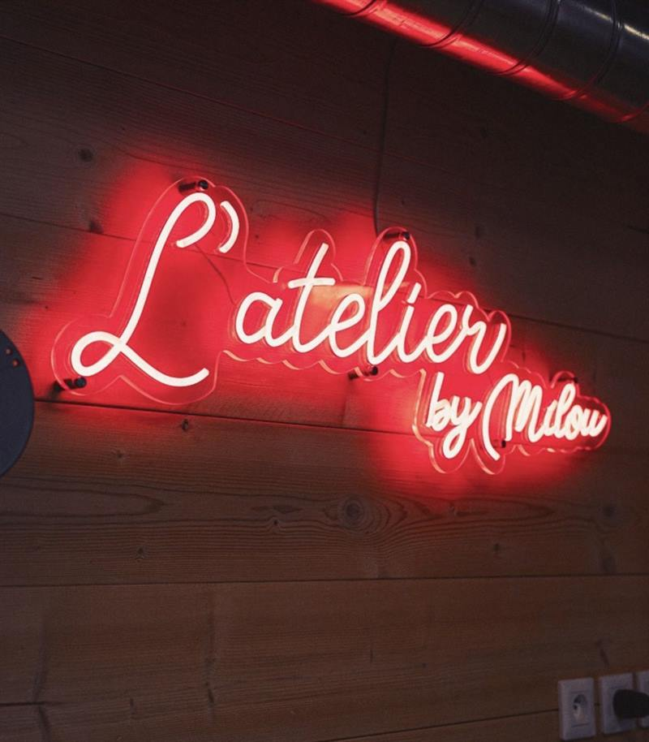
Parce que vos skis méritent le meilleur, notre atelier les prépare à la main, comme une pièce de collection.
Ouvert sur la rue comme une cuisine de chef, l'atelier est entièrement dédié à votre matériel : tous les skis de location sont entretenus après chaque sortie, pour une glisse toujours parfaite.
Nos skimen accueillent aussi votre propre matériel : déposez vos skis le soir et, selon l'affluence, retrouvez-les prêts à glisser le lendemain matin.
Un fartage à chaud, fait à l'établi, pour une glisse fluide et une semelle protégée du froid sec du glacier.
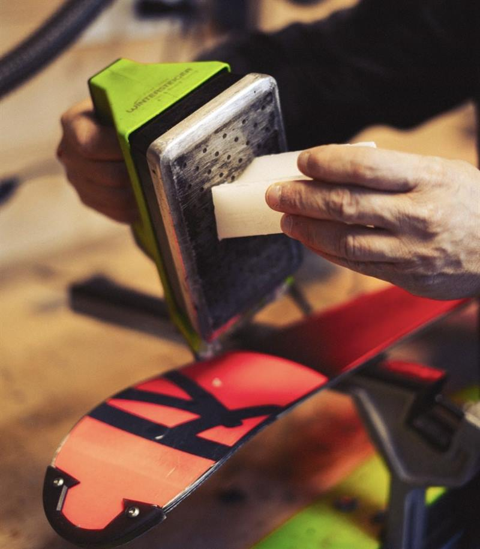
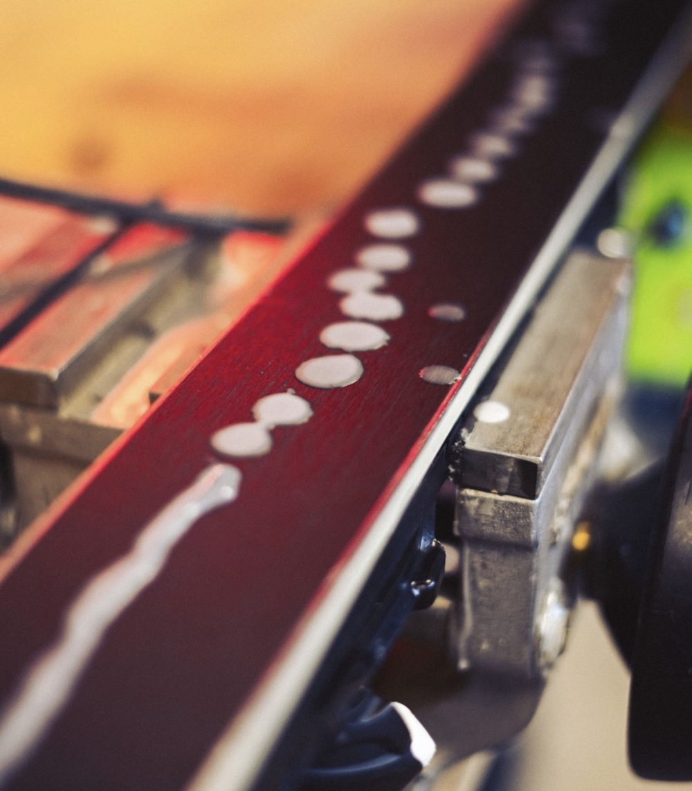
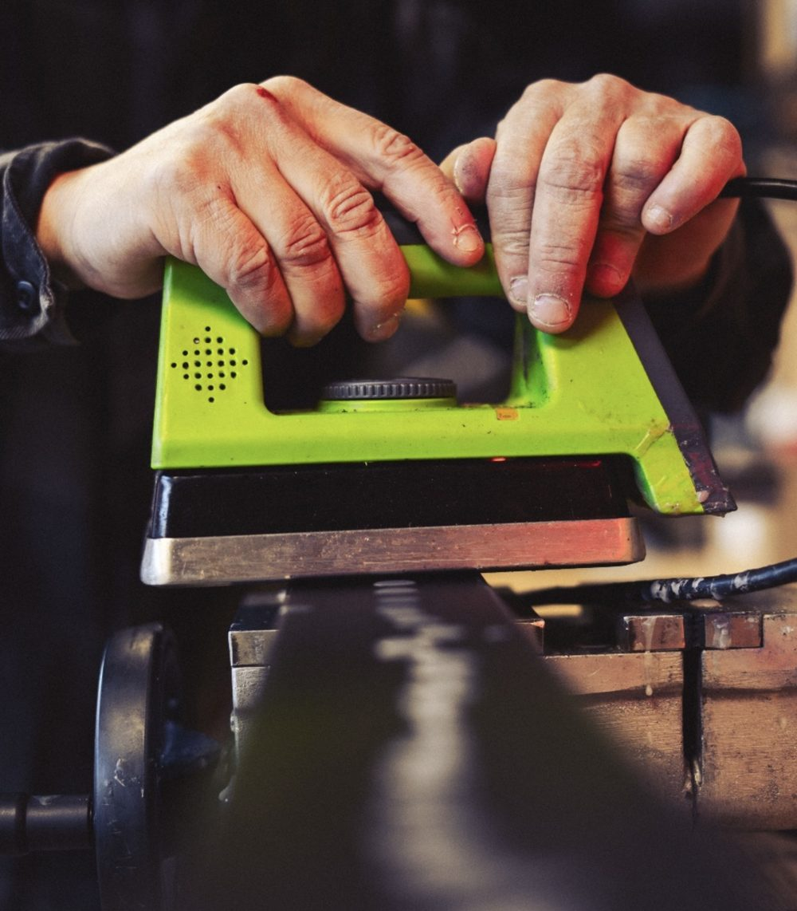
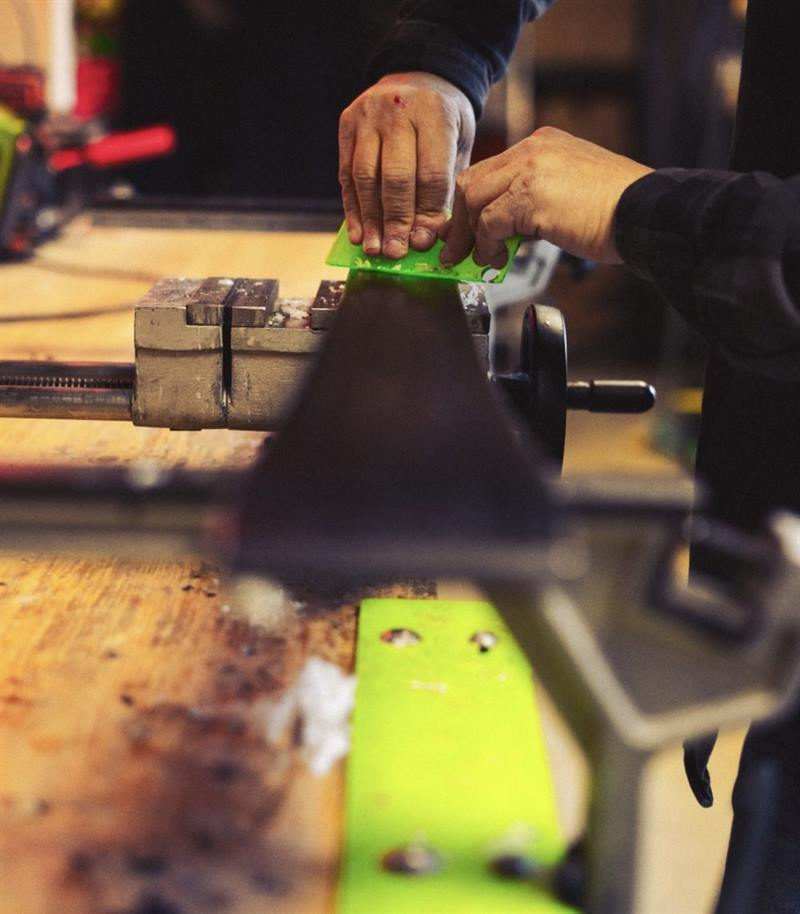
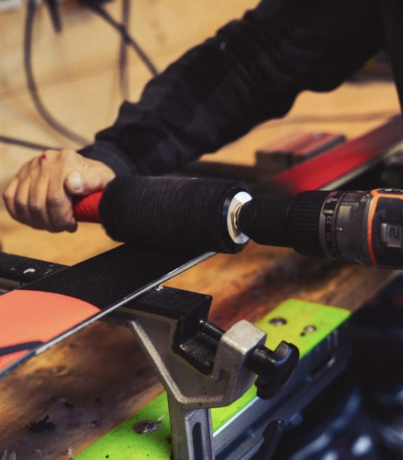
Choisissez votre matériel en ligne en quelques clics : il vous attend réglé à votre mesure, à deux pas des pistes.
Réserver ma locationUn regard attentif sur votre pratique, votre morphologie et votre style.
La boutique vous accueille en dehors des heures d'affluence, sur réservation.
Indiquez vos tailles et envies avant votre arrivée, nous préparons une sélection.
Chaque achat peut être présenté dans un écrin signé Milou Sports.
Réservez en ligne sur notre page de location Sport 2000 Milou Sports, par téléphone au 04 76 80 50 42, ou directement en boutique.
Oui. Grâce à notre grand parc de matériel, vous pouvez venir directement en boutique et repartir équipé, sans réservation préalable.
Chez Milou Sports, 126 avenue de la Muzelle : une boutique de ski haut de gamme réunissant Fusalp, Bogner, Perfect Moment, Colmar, Lacoste, From Future, UGG et Oakley, avec un service de location de ski premium et un atelier d'entretien ouvert sur la rue.
Au 126 avenue de la Muzelle, 38860 Les Deux Alpes (Isère) : une boutique d'angle idéalement placée, proche des pistes, à 200 m du télésiège du Diable et des caisses des remontées mécaniques.
Tous les jours de 8h30 à 19h30 pendant la saison d'hiver, du 27 novembre 2026 au 2 mai 2027.
Skis (gammes Bleue, Rouge, Noire et Diamant), snowboards, snowscoots, chaussures de ski, casques et masques, ainsi que du matériel adapté aux enfants.
Oui : des snowscoots Centsix nouvelle génération, tout suspendus, en plusieurs gammes. Tous les détails sur notre page location de snowscoot aux Deux Alpes.
Oui, le matériel peut être échangé en cours de séjour. Les fixations sont réglées sur mesure et tous les skis sont entretenus après chaque sortie dans notre atelier ouvert sur la rue.
Oui, notre atelier entretient aussi votre matériel personnel : fartage à chaud, affûtage des carres, réparation de semelle et réglage des fixations. Déposez vos skis le soir et, selon l'affluence, retrouvez-les prêts le lendemain matin.
Oui, nous gardons vos skis dans la boutique : vous repartez l'esprit léger pour vous détendre après votre journée sur les pistes.
Oui, la livraison de skis à domicile est possible. Contactez-nous au 04 76 80 50 42 pour l'organiser.
Les tarifs varient selon les dates et la gamme choisie. Les prix à jour sont affichés sur notre page de réservation en ligne.
Fusalp, Perfect Moment, Bogner, Colmar, Lacoste, From Future, UGG et Oakley (masques, lunettes et accessoires). Les pièces présentées sur le site sont disponibles uniquement en boutique, elles ne sont pas vendues en ligne.
Oui, l'équipe vous accueille en français et en anglais. Yes, our team welcomes you in French and English.
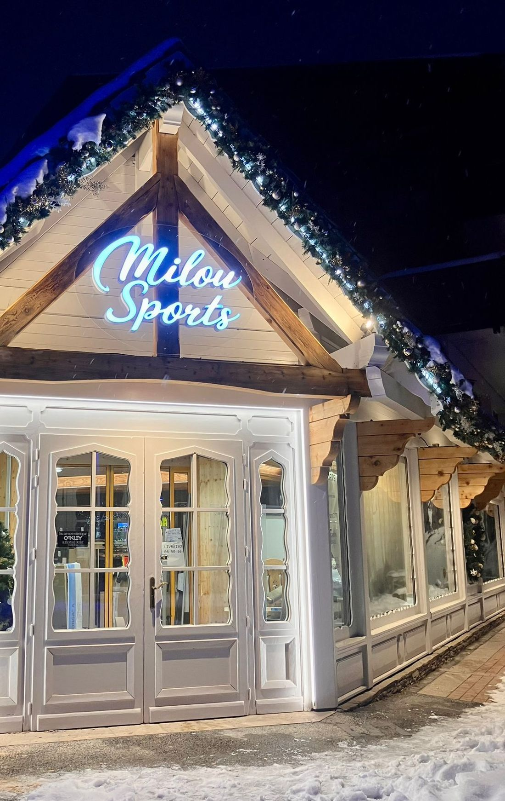
Milou Sports
126 avenue de la Muzelle
38860 Les Deux Alpes
04 76 80 50 42
milousports@gmail.com
Instagram · @milou_sports
Saison d'hiver du 27 novembre 2026 au 2 mai 2027